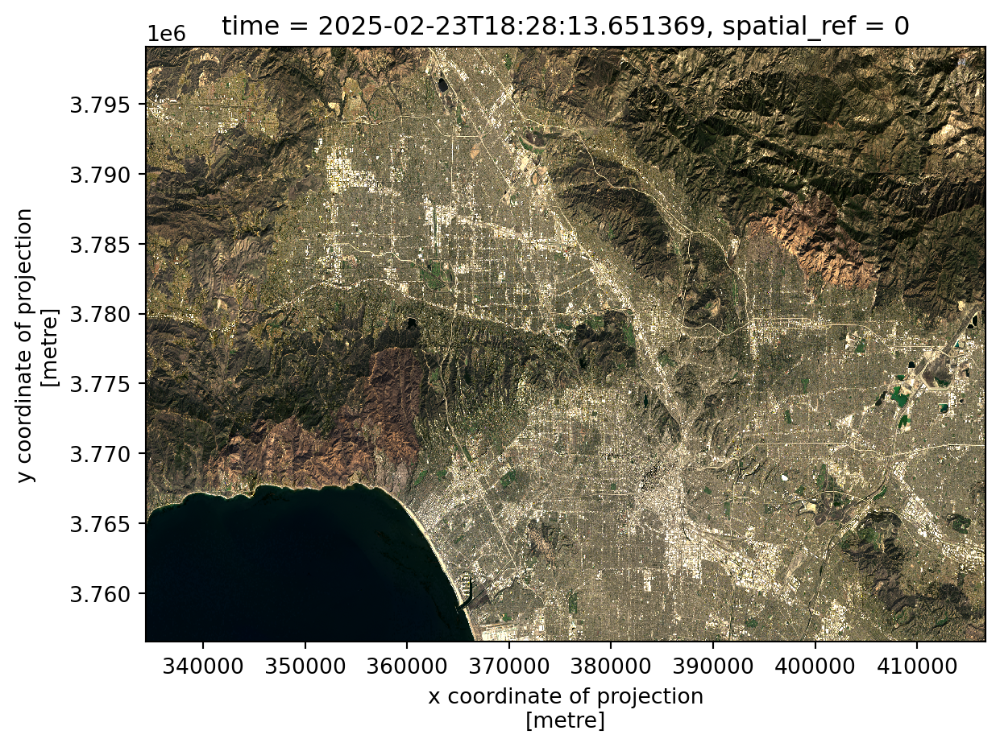
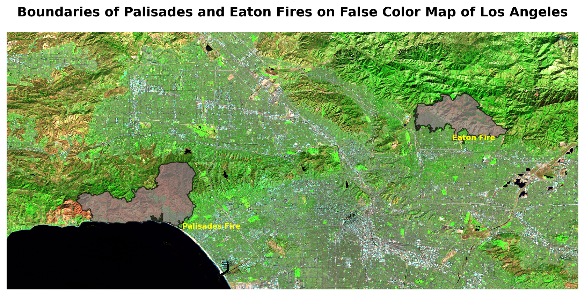
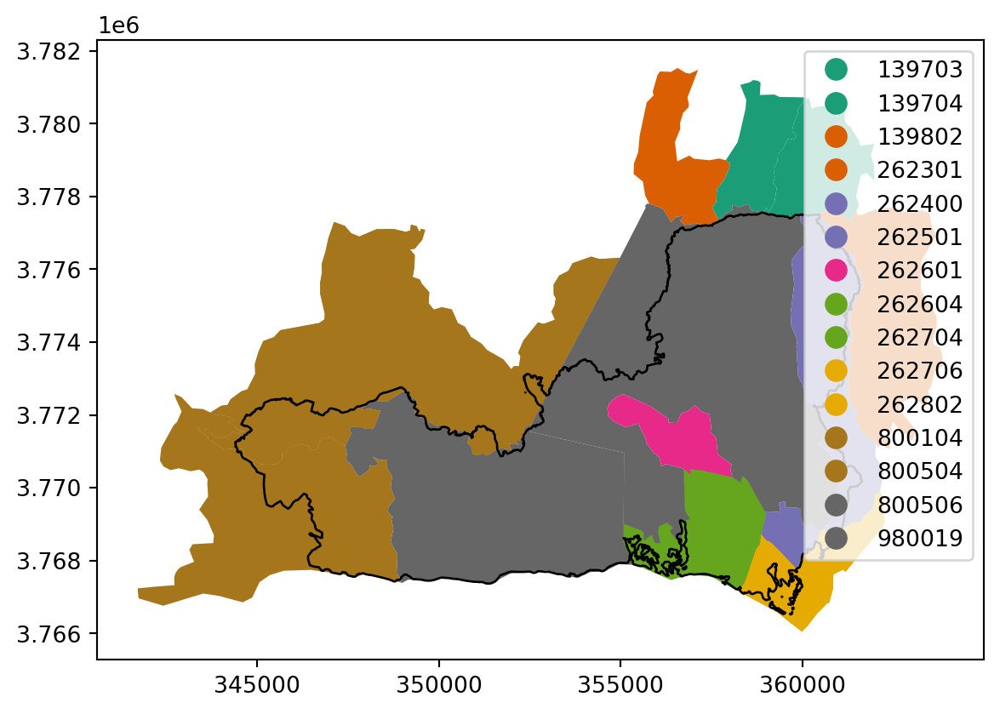
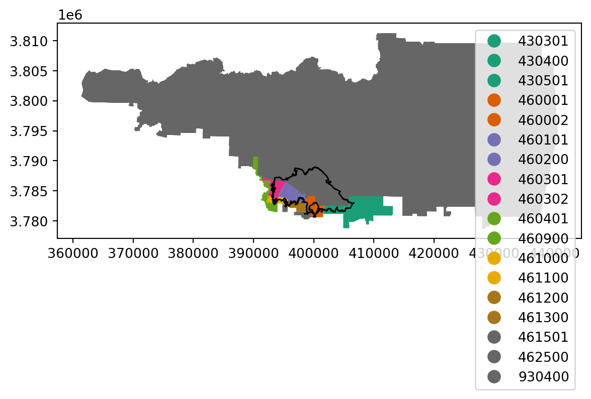
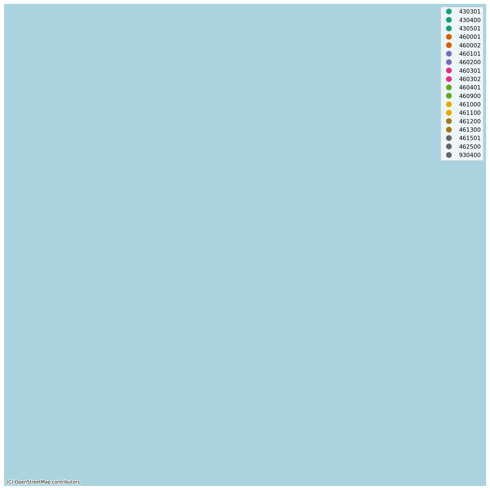
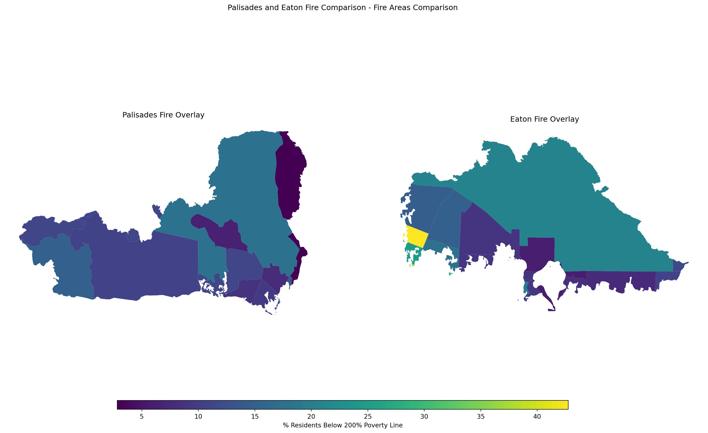

import netCDF4
print("netCDF4 is working!")netCDF4 is working!Stephan Kadonoff
December 2, 2025
Contents:
Libraries and Datasets
Import Landsat and Fire Vector Data
Raster Data Wrangling
True and False Color Imaging
Final Raster Map Visualization
Social Component to Wildfires
Datasets:
1. LANDSAT 8 COLLECTION 2 LEVEL-2 DATA: USGS’s RASTER DATA
a. Data source and metadata: Microsoft Planetary Computer data catalogue
2. PALISADES AND EATON FIRE POLYGON VECTOR DATA
a. Data source and metadata: ESRI ArcGIS Hub
3. ENVIRONMENTAL JUSTICE INDEX DATA
a. Data source and metadata: ATSDR- Geospatial Research, Analysis, and Services Program
library(reticulate)
use_python("C:/Users/kadon/.conda/envs/eds220-env/python.exe", required = TRUE)
py_config()To begin with, we shall import the landsat raster data by utilizing xarray, as well as similarly reading in the the geojsons and geodatabase files with geopandas.
# import the landsat dataset
fp = os.path.join('220data', 'landsat8-2025-02-23-palisades-eaton.nc')
landsat = xr.open_dataset(fp)
landsat
# read in the perimeter data, create filepath variables for to read the geojson files in easier.
eaton_fp = '220data/Eaton_Perimeter_20250121.geojson'
palisades_fp = '220data/Palisades_Perimeter_20250121.geojson'
eaton = gpd.read_file(eaton_fp)
palisades = gpd.read_file(palisades_fp)
# import the EJI data
eji_data = gpd.read_file(os.path.join('220data', 'EJI_2024_United_States.gdb'))Now that we have our necessary libraries loaded, the data itself read in, we can begin wrangling the data.
We will start by matching the coordinate reference systems (CRS) between the palisades and eaton geojsons, along with checking the landsat crs.
EPSG:4326
EPSG:4326
CRS: NoneWhat this tells us is that, due to the nature of the landsat data, the CRS is stored within one of the object “landsat” variables, and will need to be extracted to properly set the CRS.
# reset the CRS from the spatial_ref variable as the CRS for the whole dataset
landsat = landsat.rio.write_crs(landsat.spatial_ref.crs_wkt)
# now check that the CRS is properly stored
print('CRS: ', landsat.rio.crs)
# match CRSs between the fire perimeters and the raster map
palisades = palisades.to_crs("epsg:32611")
eaton = eaton.to_crs("epsg:32611")
# check to make sure the crs are updated
assert palisades.crs == eaton.crs
assert palisades.crs == landsat.rio.crsCRS: EPSG:32611Perfect! Now that we have set the landsat’s CRS, we can begin mapping
In this section, we will create two images of the greater Los Angeles Area, utliizing True and False coloring systems. This will provide a “real” image of what we expect a satellite captured image to look like, as well as a map where-in we see a non-visual spectrum colored map to view the AOI differently for better analysis.

Here we see a “True” color map image where we essentially matched the landsat data bands to create a visual that matches what you or I would see within the normal visual spectrum.
As a brief explanation of the above code, we are using the “red”, “green”, and “blue” bands from the ‘landsat’ object to visualize the desired area, and we use that specific color order to match the expected “true” color system. Secondly, we used the fillna() function and replaced all NA values with 0 to supress a warning.
Now, lets try to create a visual witha “false” color color system.
Excellent, we have now created a map of same AOI but by using the shortwave infrared, near infrared, and red bands. Notice that we also changed the sequence of the colors within the function, so now red is the third variable we utilize instead of the first.
For context, the Shortwave infrared (or SWIR) band is used to visualize the burn areas, which are shown under the fire perimeter polygons, the Near-Infrared (NIR) band is visualizing the vegetation spaces and other non-urban areas, which are shown in bright green, and the Red band is visualizing water bodies, urban areas and non-vegetated areas in general.
Now that we have all the pieces set-up, we can create a final visual analysis
# make a map
fig, ax = plt.subplots(figsize = (11,5)) #create a figure and dimensions of the final map
# map the eaton polygon onto the landsat false coloring
eaton.plot(ax = ax,
edgecolor = "black",
linewidth = 1,
color = 'grey',
alpha = 0.7)
#map the palisades polygon onto the lands false coloring
palisades.plot(ax = ax,
edgecolor = "black",
linewidth = 1,
color = 'grey',
alpha = 0.7)
#use the false color map from above
landsat[["swir22", "nir08", "red"]].to_array().plot.imshow(robust = True)
# set a title for the map
ax.set_title("Boundaries of Palisades and Eaton Fires on False Color Map of Los Angeles",
fontsize=14, fontweight = 'bold')
# remove axis
ax.axis('off')
# add annotations
ax.annotate('Grey Polygons: Eaton and Palisades Fire Boundaries',
xy = (100,100), fontsize = 4, color = 'black')
# add labels for each fire polygon
eaton_centroid = eaton.geometry.centroid.iloc[0]
palisades_centroid = palisades.geometry.centroid.iloc[0]
#add text names for the two fire polygons, indicating which is which
ax.text(eaton_centroid.x, eaton_centroid.y,
"Eaton Fire",
color="yellow", fontsize=8, weight="bold")
ax.text(palisades_centroid.x, palisades_centroid.y,
"Palisades Fire",
color="yellow", fontsize=8, weight="bold") Text(359685.3615620602, 3766541.917556676, 'Palisades Fire')
The above map utilizes false color imaging methods for visualizing the Greater Los Angeles area, and visualizes the burn areas of the Eaton and Palisades fires.
Specifically, the Shortwave infrared (or SWIR) band is used to visualize the burn areas, which are shown under the fire perimeter polygons. The Near-Infrared (NIR) band is visualizing the vegetation spaces and other non-urban areas, which are shown in bright green. Lastly the Red band is visualizing water bodies, urban areas and non-vegetated areas in general.
One aspect of Natural Disasters that is often overlooked is the social component of these calamities. While we can often quantify and put a numeric number to the amount of damage a hurricane may have done, or the insurance payouts that displaced residents may receive, we too often brush over that even if a home is rebuilt there are more then landscape burn scars that remain.
This final portion is focused on the social component of the Eaton and Palisades fires. We will look at the make-up of the communities who were impacted, and who they are. Above we read in the Environmental Justice Index (EJI) geodatabase, which will assist us in understanding who the people impacted by these fires are.
To begin, lets do some simple data wrangling to get the EJI data in-line with what we’ve already done.
Now that the EJI data has been matched to the vector polygon, let’s create some visualizations.


The two above map visuals are an overlay of the Palisades and Eaton fires, respectively, overlayed with the census tracts the fire burns intersected with. Since Census Tracts are the standard geographic unit for the EJI data, this gives us the best flexibility for analysis.
Our next step will be clipping the polygons to our target area.
Lastly, we will utilize the above clipped vector data to create a final map showcasing the percentage of census track residents who’s household income is less than 200% of the Federal Poverty level.
C:\Users\kadon\.conda\envs\eds220-env\Lib\site-packages\contextily\tile.py:645: UserWarning: The inferred zoom level of 27 is not valid for the current tile provider (valid zooms: 0 - 19).
warnings.warn(msg)
fig, (ax1, ax2) = plt.subplots(1, 2, figsize=(20, 10))
# UPDATE WITH YOU EJI VARIABLE FROM STEP 1
eji_variable = 'E_POV200'
census_within_palisades = palisades_clip
census_within_eaton = eaton_clip
# Find common min/max for legend range
vmin = min(census_within_palisades[eji_variable].min(), census_within_eaton[eji_variable].min())
vmax = max(census_within_palisades[eji_variable].max(), census_within_eaton[eji_variable].max())
# Plot census tracts within Palisades perimeter
census_within_palisades.plot(
column= eji_variable,
vmin=vmin, vmax=vmax,
legend=False,
ax=ax1,
)
ax1.set_title('Palisades Fire Overlay')
ax1.axis('off')
# Plot census tracts within Eaton perimeter
census_within_eaton.plot(
column=eji_variable,
vmin=vmin, vmax=vmax,
legend=False,
ax=ax2,
)
ax2.set_title('Eaton Fire Overlay')
ax2.axis('off')
# Add overall title
fig.suptitle('Palisades and Eaton Fire Comparison - Fire Areas Comparison')
# Add shared colorbar at the bottom
sm = plt.cm.ScalarMappable( norm=plt.Normalize(vmin=vmin, vmax=vmax))
cbar_ax = fig.add_axes([0.25, 0.08, 0.5, 0.02]) # [left, bottom, width, height]
cbar = fig.colorbar(sm, cax=cbar_ax, orientation='horizontal')
cbar.set_label('% Residents Below 200% Poverty Line')
plt.show()
NIFC FIRIS (2025). Palisades and Eaton Dissolved Fire Perimeters (2025, Jan. 21). https://hub.arcgis.com/maps/ad51845ea5fb4eb483bc2a7c38b2370c/about [Accessed 11/20/2025]
United States Geological Survey. Landsat Collection 2 Level-2: Microsoft Planetary Computer. (2024). https://planetarycomputer.microsoft.com/dataset/landsat-c2-l2 [Accessed 11/20/2025]